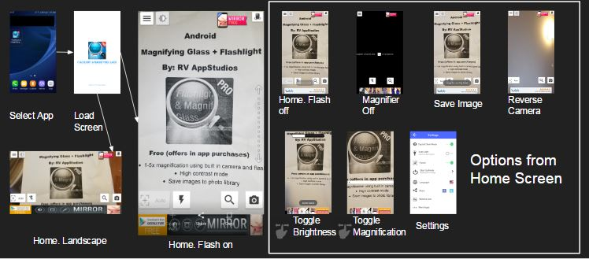
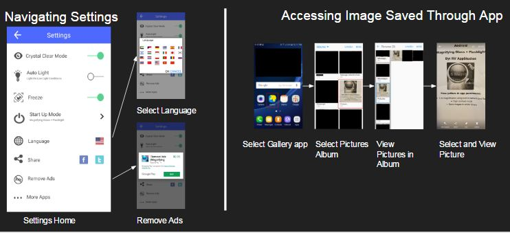
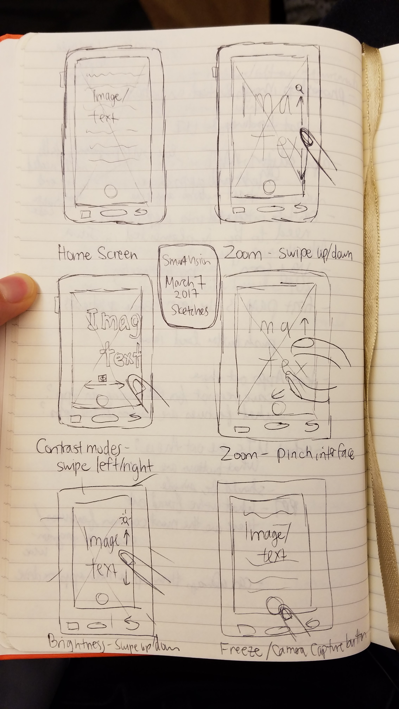
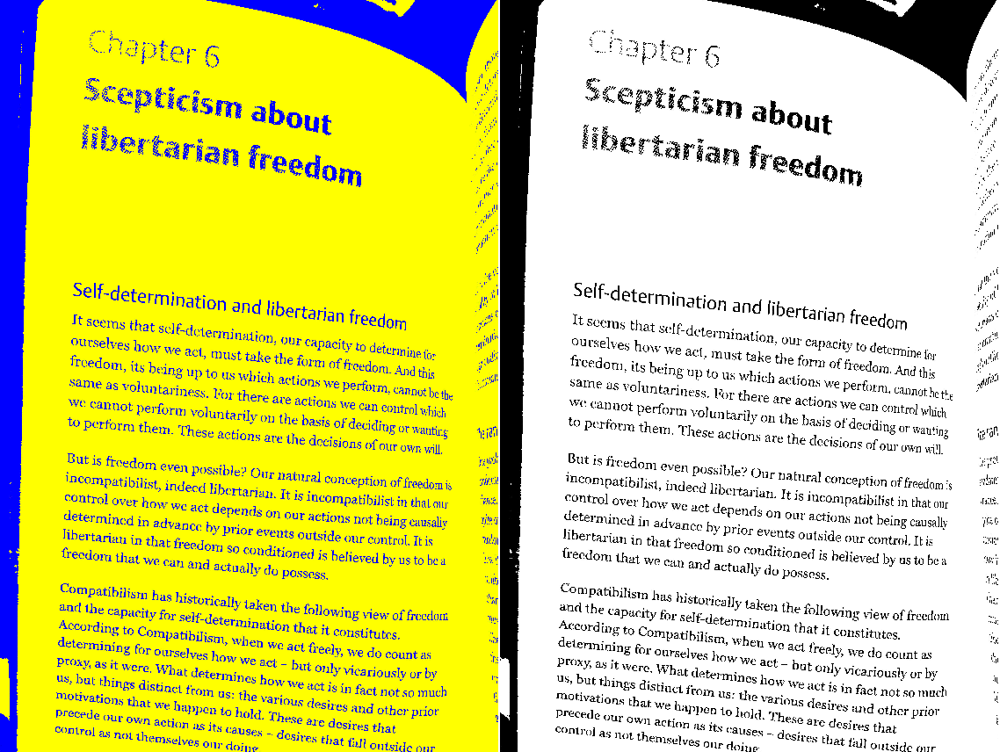

SmartVision
UX Design. Prototyping. App Development.
mobile app design/dev for low-vision people.
Problem and Goal Statement
SmartVision is a smartphone application that aims to improve low-vision patients’ lives, especially those who suffer from central vision loss, by being a relatively inexpensive, portable, and multifunctional magnifying tool.
Competitive Analysis
In order to best help low vision people, my team conducted a competitive analysis with other smartphone applications to decide what features we should focus on designing and implementing.
Parameters included: price, operating system, ratings, presence of filters, ads, gestures, etc.
We learned there are many great magnifying apps out there! Because one team member had experience with Computer Vision and stitching, we envisioned making our app different by allowing users to scan over something they wanted to read, and then use stitching to make it into one large static picture that users could read from. They would ideally be able to zoom in on the picture and add contrast filters.
Interaction Map
I then selected one application and mapped the different interactions in the app, so that I could understand the information architecture and interactions.
 Sketches
Next, I drew some sketches to brainstorm what gestures and interfaces would be appropriate for each feature we were interested in implementing.
Digital Prototype
I created a digital prototype using Photoshop and Marvel. Swiping left and right would allow users to change the color contrast and combinations to suit their vision.
Final Thoughts and Lessons
This project presented quite a few challenges and remains incomplete. The biggest challenge was that our team lacked the resources and skills to do this project. I had web development skills, but had never used Android Studio or written Java, and my other teammates had not either. This resulted in us spending a lot of our time learning Android Studio. Second, since there are many magnifying apps in the market, our app at a minimum had to have the common features expected in an app, such as contrasting filters, ability to zoom, and an easy user interface, in order to be competitive. However, these features alone took so much time to implement that we did not make much progress by semester's end.
The lesson learned here is that teams need to honestly assess each team member's strengths and weaknesses and ensure a project is doable, given everybody's capabilities. Our vision for this app was perhaps too ambitious, but we learned our lessons, and the next app we developed -- an eye disease simulator -- went better!